compare.best 不作为证据。缺部位或 panel 不足必须从现有可读帧补足，无图时选择“需要补候选帧”。
L7_eee1bf37_kimura_takemoto · kimura_takemoto · O3 · 缺少必需部位帧：胃角缺少必需部位帧：胃体缺少必需部位帧：胃底当前 panel 少于族级下限萎缩性胃炎（O-3 锚点等级：O3本例无需逐 finding 裁决。
批准时必须满足族级范围，医生证据帧与部位帧会自动勾入。
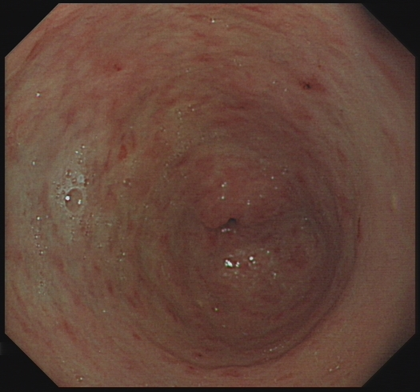
RF_6516b4d773fb657dL7_ef75d448_kimura_takemoto · kimura_takemoto · C1 · 缺少必需部位帧：胃窦缺少必需部位帧：胃体当前 panel 少于族级下限萎缩性胃炎（C1 锚点等级：C1本例无需逐 finding 裁决。
批准时必须满足族级范围，医生证据帧与部位帧会自动勾入。
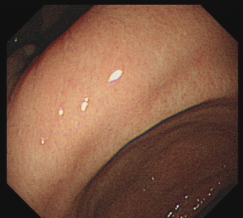
RF_ce68eae171f8a5f5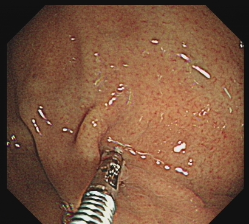
RF_6f477961f8361555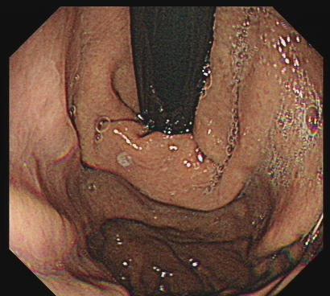
RF_9b6255a284a2874b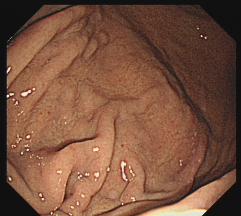
RF_6f67190141a60f4aL7_fa71adec_kimura_takemoto · kimura_takemoto · O3 · 缺少必需部位帧：胃角萎缩性胃炎（O3 锚点等级：O3本例无需逐 finding 裁决。
批准时必须满足族级范围，医生证据帧与部位帧会自动勾入。
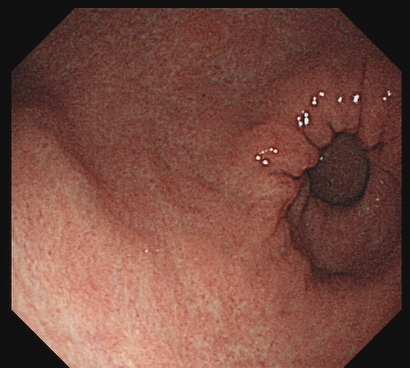
RF_37e92998f60167cd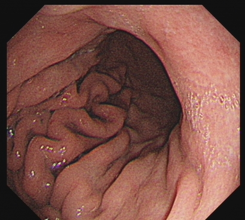
RF_7cb6836e8a13ed10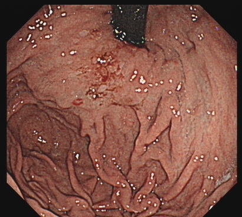
RF_f51575bedebb9e33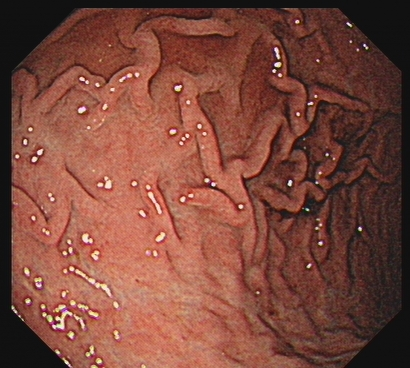
RF_2cb906126d0ebfef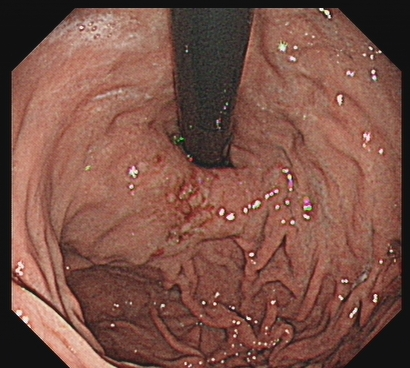
RF_8a6a1101bc4edc93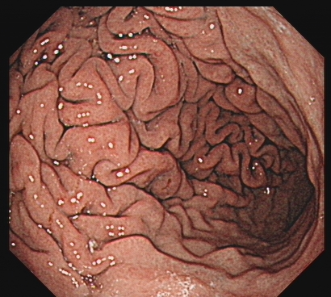
RF_d25f12ac2097ab0c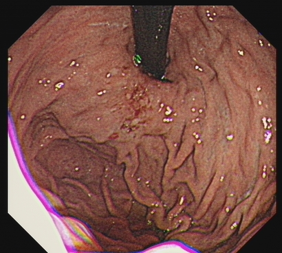
RF_87b8e5f64a29a12e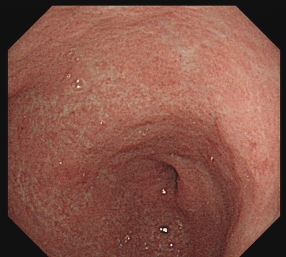
RF_82a042b504c1da26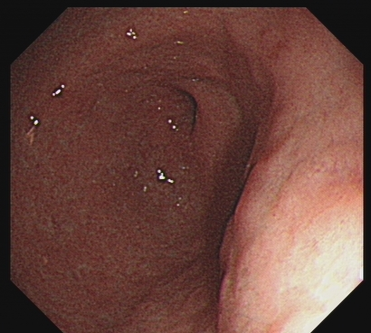
RF_4b0312660771b5b8L7_fc0ddb5e_kimura_takemoto · kimura_takemoto · C3 · 缺少必需部位帧：胃底需医生确认报告等级萎缩性胃炎（C-3 锚点等级：C3本例无需逐 finding 裁决。
批准时必须满足族级范围，医生证据帧与部位帧会自动勾入。
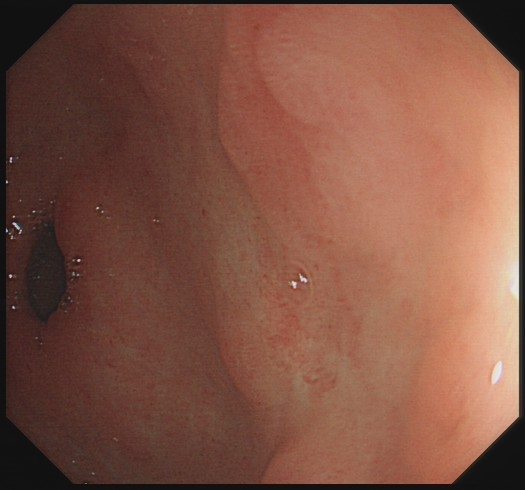
RF_7f00fce1d406d547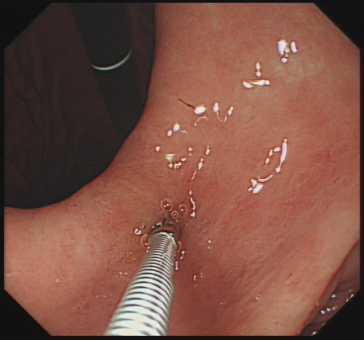
RF_13feef967480b6e2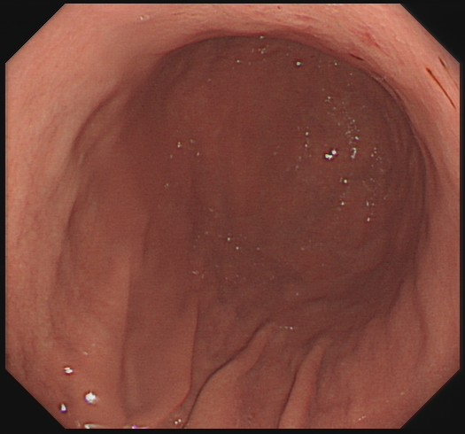
RF_3de85225601d50bd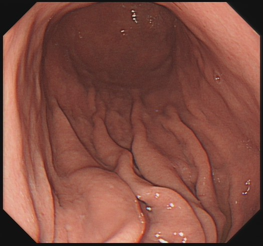
RF_977bfa629d04903f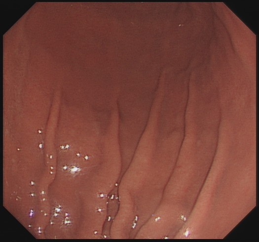
RF_9137d6ad6cef17ae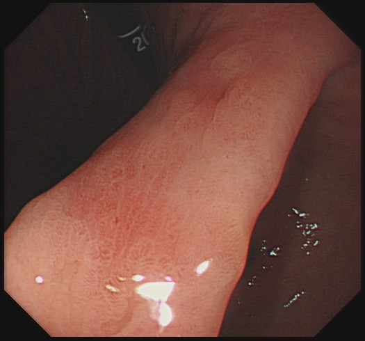
RF_835dc6c93e572512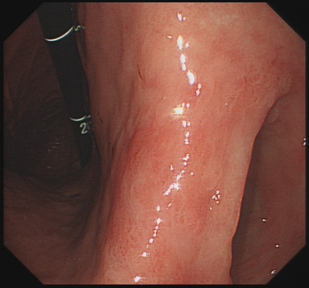
RF_e354ccad5e2c5499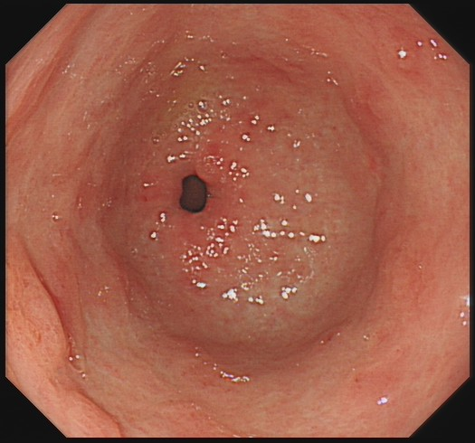
RF_8bde794ee99f29bf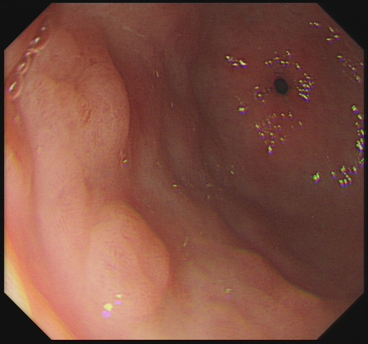
RF_eb4d53569cb97625L7_fe0a1fd8_kimura_takemoto · kimura_takemoto · C3 · 缺少必需部位帧：胃底需医生确认报告等级萎缩性胃炎（C-3 锚点等级：C3本例无需逐 finding 裁决。
批准时必须满足族级范围，医生证据帧与部位帧会自动勾入。
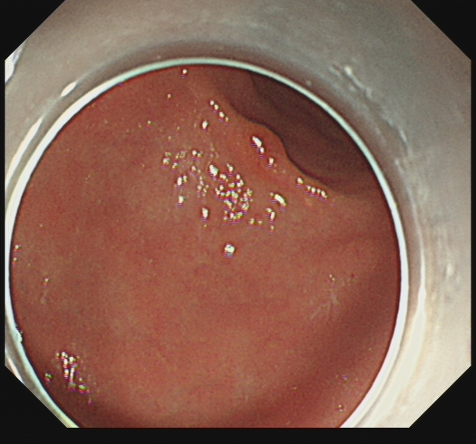
RF_cdaa35b091c8e9f0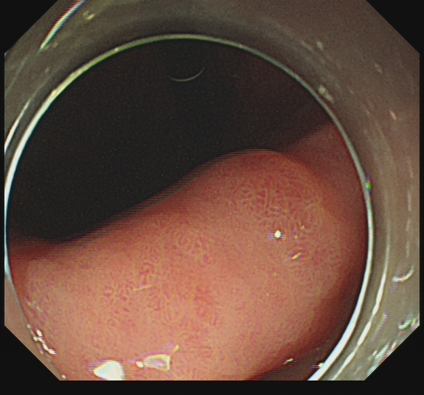
RF_eced74ceba4d25db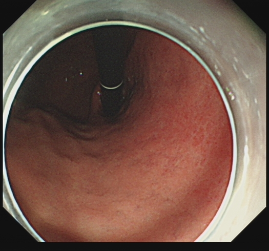
RF_cff5e093d3e2fa33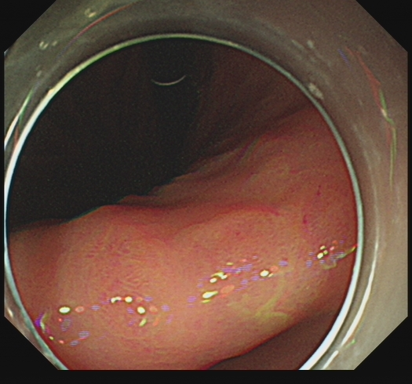
RF_902e3e3cee3fe32f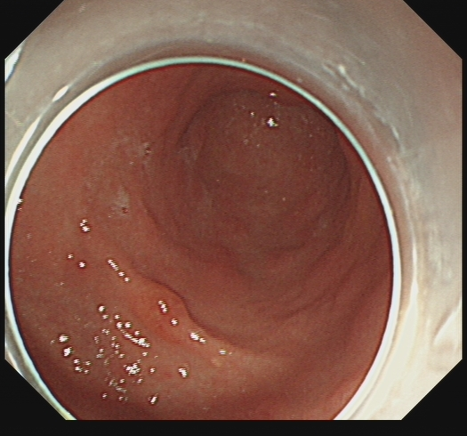
RF_f75015b9f9ab1790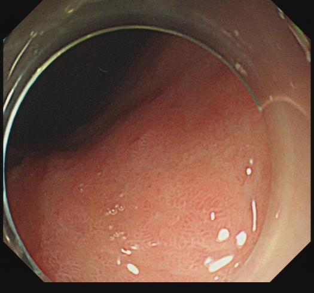
RF_11c05468a5cc3a0c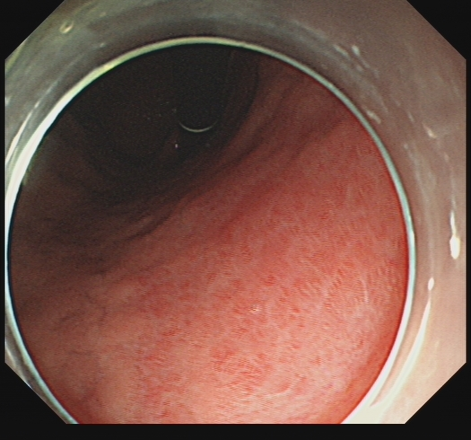
RF_9ec925a483cdb68f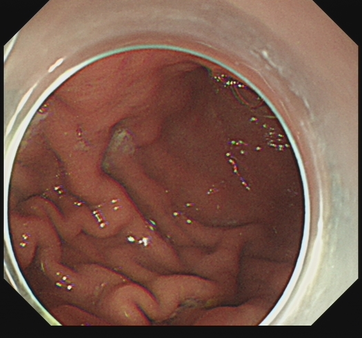
RF_57ff734b6ca8c74a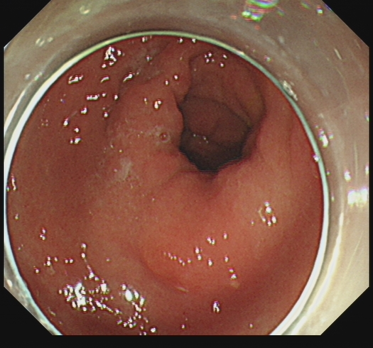
RF_fd7ff642636f5558L7_ff697a88_kimura_takemoto · kimura_takemoto · O1 · 缺少必需部位帧：胃角需医生确认报告等级萎缩性胃炎（O1 锚点等级：O1本例无需逐 finding 裁决。
批准时必须满足族级范围，医生证据帧与部位帧会自动勾入。
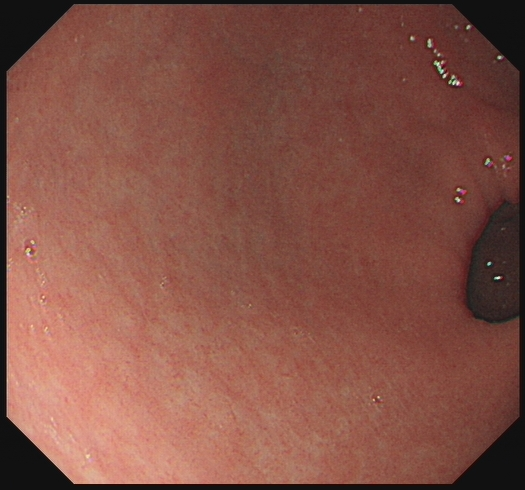
RF_a5f6f7bd8f8b98af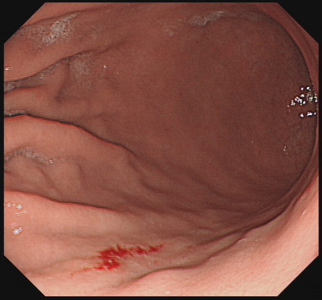
RF_20bef20fd8123bd1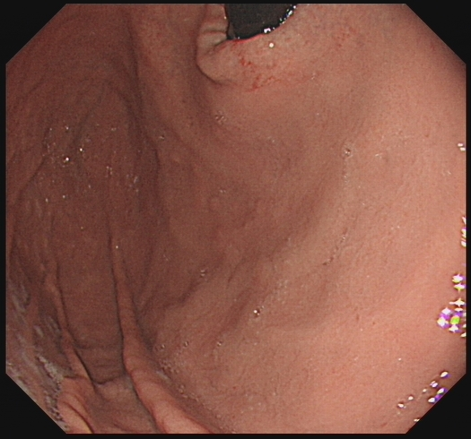
RF_86058225f482c239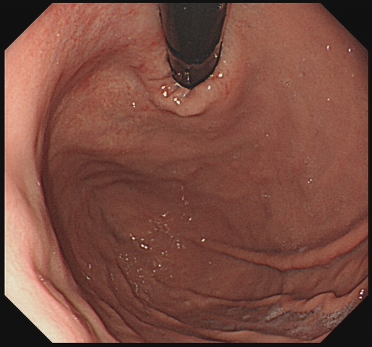
RF_fd9bd953aa118541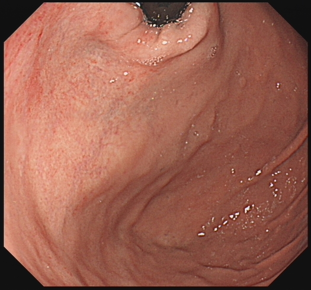
RF_e30668e68e7a328c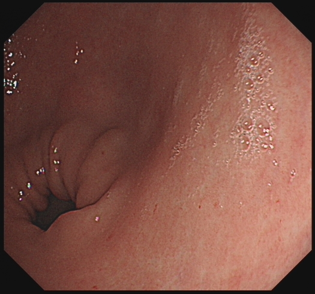
RF_503b2bb6282e45b8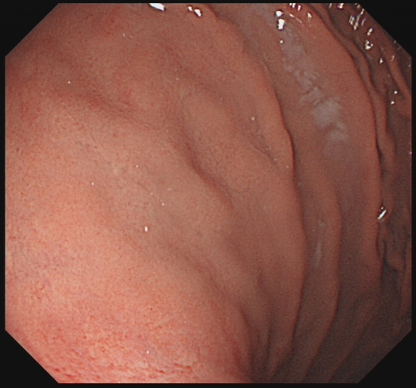
RF_882d5c2798e940ea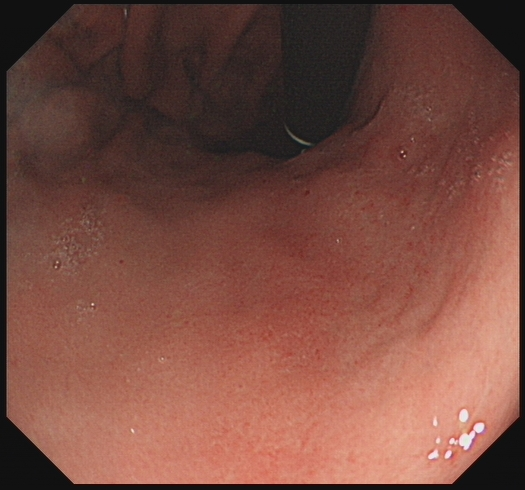
RF_db94d0d0595f80e6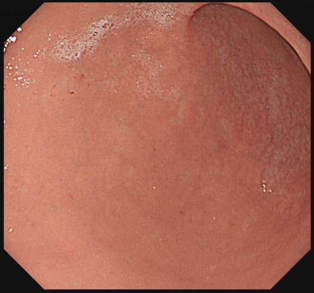
RF_c6a3b6b1af534b92